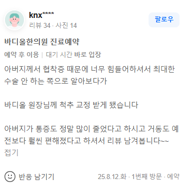

치료 증례 (knx**** 님 실제 네이버 영수증 리뷰 원문)
"아버지께서 협착증 때문에 너무 힘들어서 하셔서 최대한 수술 안 하는 쪽으로 알아보다가 바디올 원장님께 척추 교정 받게 됐습니다 아버지가 통증도 정말 많이 줄었다고 하시고 거동도 예전보다 훨씬 편해졌다고 하셔서 리뷰 남겨봅니다~~"

1. 고령 환자의 협착증 수술은 인대 인공 구조물 고정으로 인한 인접 분절 퇴행 등의 부작용 리스크가 따릅니다.
2. 단순히 겉근육만 만지는 마사지성 추나는 퇴행으로 고착된 고령 환자의 골반과 요추를 열어주지 못합니다.
3. 바디올은 SART 부모님 특화 안심 교정을 통해 골밀도와 조직 상태를 고려한 안전한 척추관 감압을 시행합니다.
연세가 많으신 부모님 세대의 척추관협착증은 수년 혹은 수십 년에 걸친 퇴행성 변화의 결과물입니다. 척추를 지탱하는 뼈와 인대가 노화로 비후해지면서 다리로 가는 척추 신경관을 사방에서 조이게 됩니다. 이때 뼈를 깎아내고 나사못을 박는 구조물 고정 수술은 일시적인 공간 확보에는 도움이 될 수 있으나, 수술 부위 위아래 분절에 가해지는 역학적 부하가 2~3배 급증하여 '인접 분절 퇴행 증후군'이라는 2차 재발을 유발하기 쉽습니다. 고령일수록 전신마취와 긴 회복 기간의 리스크가 크기 때문에 반드시 비수술적 구조 복원을 먼저 고려해야 합니다.
일반적인 정형외과 도수치료나 근막이완 추나는 통증이 발생하는 겉근육의 긴장 완화에 치중합니다. 하지만 부모님들의 척추관협착증은 이미 골반의 변위(Pelvic Distortion)와 요추의 후만화(Flat Back)가 고착되어 뼈 자체가 완강하게 잠겨 있는 상태입니다. 압박 벡터의 방향과 깊이가 심부 척추체까지 닿지 못하면 치료 직후에만 반짝 편할 뿐 다시 걸을 때 통증이 즉각 재발합니다.
바디올한의원의 SART 척추정렬회복술은 연세가 많으신 어르신들의 골밀도 저하와 인대 약화 상태를 과학적으로 진단한 뒤 진행되는 '안심 타깃 교정'입니다. 강한 수동적 충격을 주는 대신, 특수 교정 도구를 사용하여 변위된 요추와 서혜부, 골반의 유착된 인대 조직을 미세하게 두드려 깨우며 분리해 냅니다. 무너진 골반 중심축이 바로 서면 조여져 있던 척추관 내부 공간이 자연스럽게 넓어지면서 저림 현상이 줄어들고 보행 능력이 안전하게 회복됩니다.
• 골밀도 맞춤 감압 추나: 척추 압박 강도를 노년층 신체 지표에 맞춰 정밀 미세 조정하여 좁아진 추간공과 척추관을 안전하게 확장합니다.
• 하지 혈류 개선 정골술: 골반 정렬을 복원하여 신경 압박으로 저하되었던 다리 근육의 혈액 순환을 촉진하고 거동을 편안하게 만듭니다.
• 천연 성분 면역 약침: 신경 압박 부위의 허혈성 통증과 척수 염증을 부작용 없이 안전하게 제어합니다.
• 보골 탄력 한약 처방: 퇴행성으로 약해진 척추체 주변 인대와 근육의 탄력을 회복시키고 연골 조직의 추가 마모를 방지합니다.